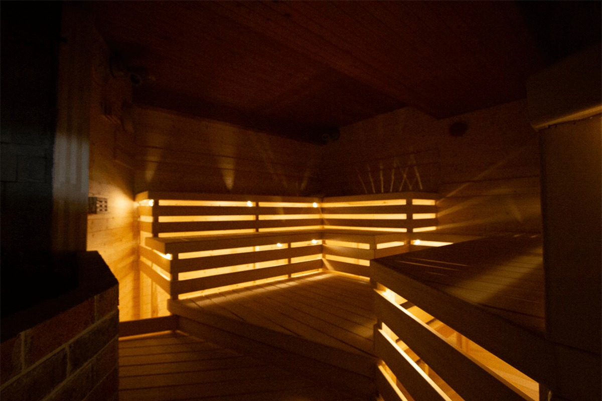
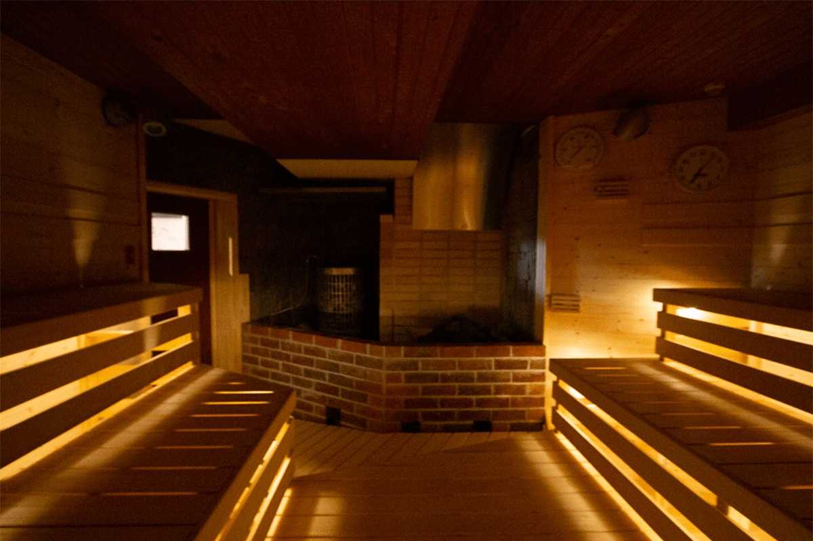
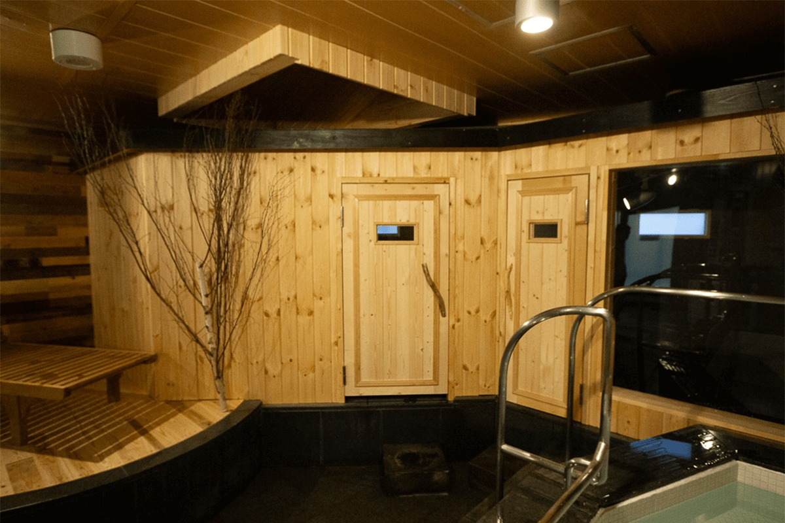
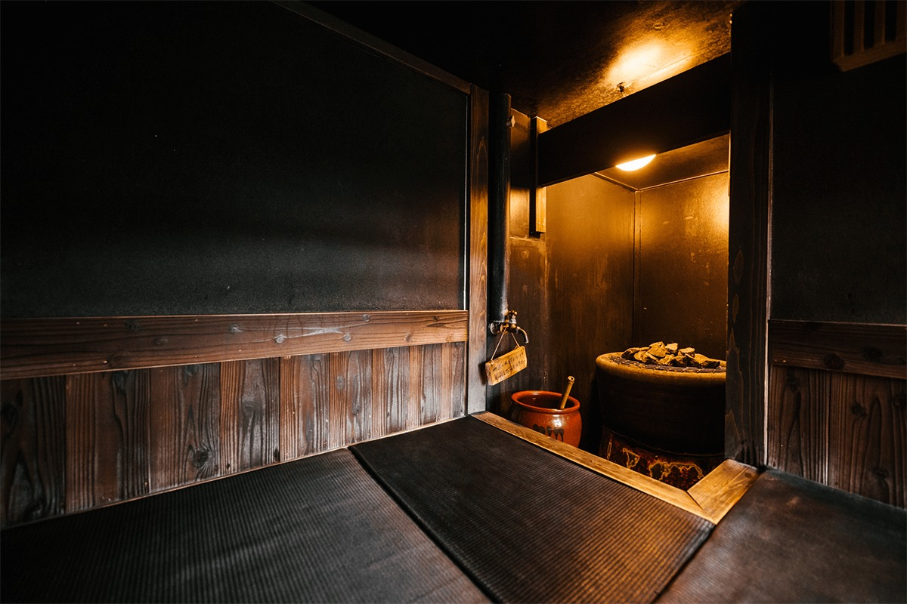
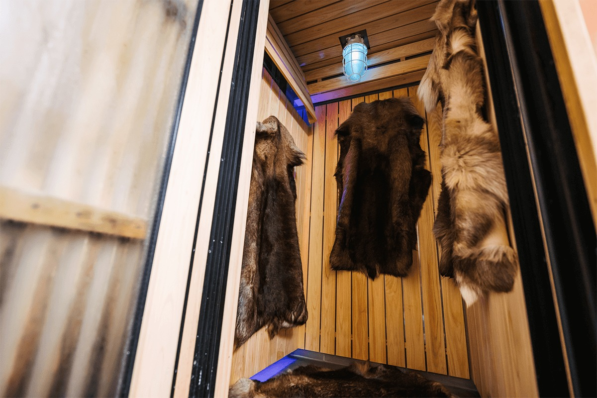
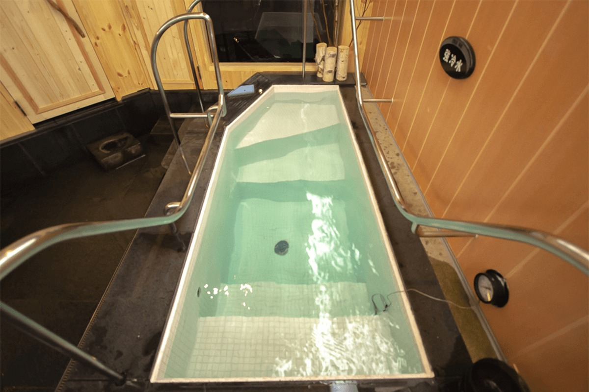
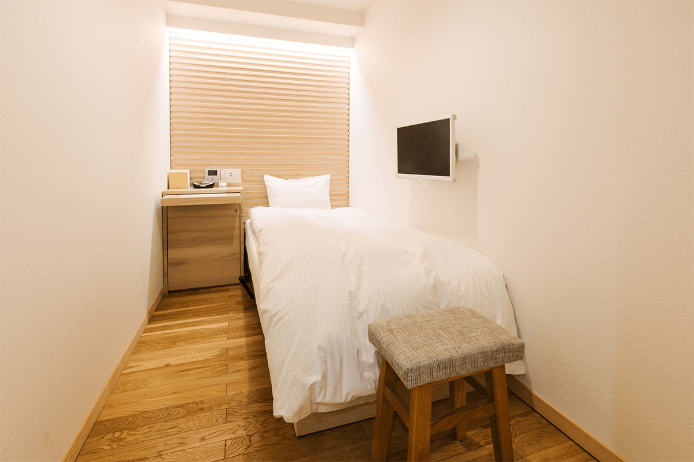
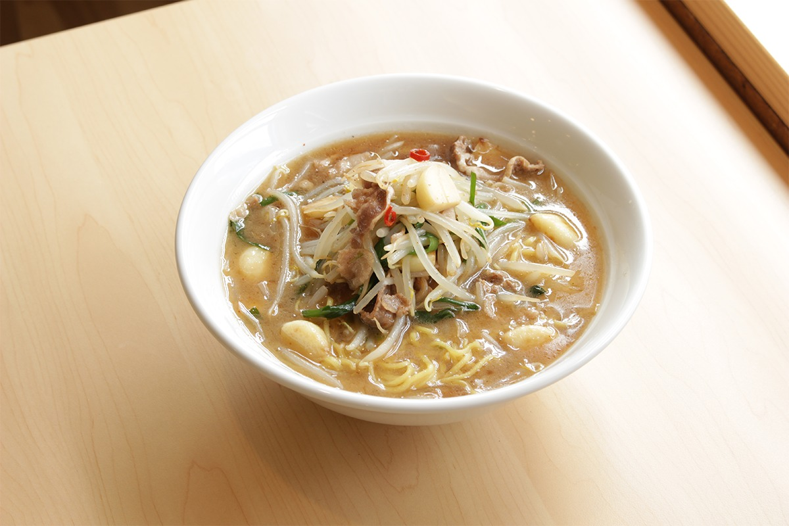

Префектура Фукуока · Хаката · сауна
Wellbe Fukuoka: финская сауна, ледяная купель и паровая баня по старинному образцу в Хакате

Когда холодает, хочется прогреться до самых костей, и многие японцы идут за этим в сауну. Wellbe Fukuoka стоит в центре Фукуоки, в районе Хаката, и собрала под одной крышей сразу несколько способов попариться и остыть.
Зачем
Сауна, купель и «тотоноу»
Чередование жара и холодной воды стало в Японии целой культурой со своим словом: «тотоноу». Так называют состояние, когда после нескольких заходов в парилку и купель тело расслабляется, а голова становится ясной. У этой культуры по всей стране много преданных поклонников.
Wellbe Fukuoka это мужская сауна при капсульном отеле в Хакате, деловом и торговом районе Фукуоки у главного вокзала города. В 2021 году её включили в подборку лучших саун Японии.
Финская сауна
Пар со всего тела

Главное в финской сауне то, как устроен жар. Печь здесь стоит ниже полок, на которых сидят гости. Когда на раскалённые камни льют воду, это называется лёйлю, пар поднимается и окутывает тело целиком. Печи сделаны в Финляндии фирмой Harvia, воздух в парилке прогревается до 80–90 градусов.
Для финской сауны влажность важна не меньше температуры. Здесь следят и за тем и за другим, а заодно за вентиляцией. Поэтому жар не колет кожу и не давит на грудь, пространство кажется мягким, и потеть можно спокойно, сколько угодно раз и в любое время.

Лёйлю
Горячий ветер от мастера
В Wellbe лёйлю устраивает специальный мастер. Он поливает камни и разгоняет к гостям горячий пар, в котором, как здесь говорят, много отрицательных ионов. Эту процедуру предлагают как новый для многих способ попариться с пользой для здоровья.
В Финляндии, на родине сауны, разогретое тело похлопывают вихтой, связкой берёзовых веток. Свежий запах листьев, минералы и сами удары разгоняют кровь, помогают вывести продукты усталости и бодрят кожу. Лёйлю и вихта для финнов неразделимы, и в Wellbe мастер лёйлю проводил процедуру с вихтой. В 2021 году её приостановили.
Карафуро
Паровая баня на одного

«Карафуро» это старинная японская паровая баня, и в Wellbe её задумали как опыт для всех пяти чувств. Смотришь, но не видишь, слушаешь, но не слышишь: такое состояние обещает эта комната, где остаёшься наедине с собой.
Образцом для неё стала баня храма Хоккэдзи в Наре. Её построили по обету императрицы Комё больше тысячи лет назад, и в Фукуоке эту идею перенесли в наши дни. Гость сам поддаёт пар и, сидя в нём, сосредотачивается на себе, как во время медитации. Это совершенно новый формат: сауна только для одного человека.
Охлаждение
Ледяная сауна и две купели

Резкое охлаждение подтягивает кожу и разгоняет обмен веществ в мышцах и печени. Считается, что оно помогает восстановиться после усталости и улучшает пищеварение, а людям, которые мёрзнут или плохо спят, его советуют особенно. Если чередовать холод с сауной, эффект сильнее.
Вода и холодный воздух отбирают тепло по-разному, поэтому купель и ледяная сауна ощущаются непохоже. Купель охлаждает сразу, и когда начинаешь получать удовольствие от удара холода, который будто пронзает голову, можно считать себя знатоком. Ледяная сауна остужает тело мягче и больше подходит новичкам. В любом случае ощущение после жара это одна из главных радостей сауны, и выбирать можно по самочувствию.

Купелей две, с холодной и очень холодной водой: в самой холодной около 5 градусов. В Финляндии после сауны прыгают в озеро, покрытое льдом, и снова идут греться. Чем чаще повторяешь этот круг, тем глубже «тотоноу».
Отдых
Номер «Пехмеа» и капсулы

Номера повышенной категории называются «Пехмеа». По-фински это слово значит «мягкий, пушистый, ровный, спокойный», и комната задумана так, чтобы гость таким и стал, и телом, и душой. Есть и обычные капсулы, где тоже можно спокойно провести время в своём углу.
Ресторан
Фирменный рамэн

После сауны можно поесть в ресторане, где готовит шеф-повар. Фирменное блюдо Wellbe Fukuoka это «Бэтокон-рамэн», а в разные сезоны меню дополняют наборами.
Wellbe Fukuoka (сауна и капсульный отель)
- Адрес
- префектура Фукуока, Фукуока, район Хаката, Гион-мати, 8-12, здание «Ротари Ямато», 2-й этаж
- Телефон
- +81 92-291-1009
- Номера
- капсулы, сауна и капсульный отель только для мужчин
- Часы работы
- сауна в будни 12:00–24:00, в субботу и воскресенье 5:00–24:00; капсулы с 14:00 до 12:00 следующего дня